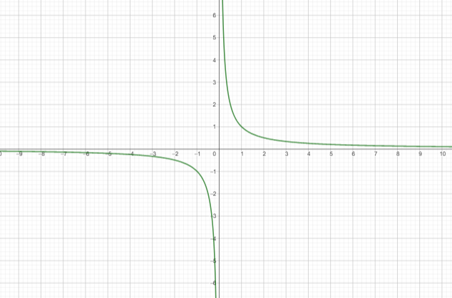
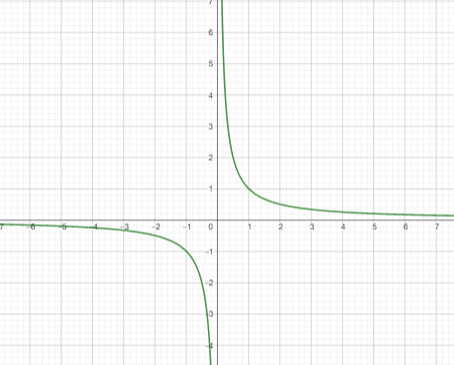

En ocasiones nos interesa estudiar el comportamiento de una función \(f(x)\) a muy largo plazo. Este "a largo plazo" lo formalizamos matemáticamente estudiando el límite \(lim_{x o \infty} f(x)\).
También podríamos pensar en estudiar cuánto valían los valores de la función "hace muchísimo" (si la variable \(x\) representa el tiempo, por ejemplo). Este estudio sería formalizado con el cálculo de \(lim_{x o -\infty} f(x)\).
Estos dos límites, \(lim_{x o \infty} f(x)\) y \(lim_{x o -\infty} f(x)\), son la base para estudiar si la función admite ramas infinitas o, sin embargo, admite algún tipo de comportamiento asintótico.
En los siguientes párrafos estudiamos los casos más tipicos.
Comportamiento clave de \( \frac{1}{x}\)

Método 1: Tabla de valores
Calculamos algunos valores de la función para \(x\) grandes:
| \(x\) | \(f(x)= frac{1}{x}\) |
|---|---|
| 10 | 0.1 |
| 100 | 0.01 |
| 1000 | 0.001 |
La tabla muestra que \(f(x)\) se hace cada vez más pequeño y se aproxima a \(0\).
Método 2: Expresión algebraica
La expresión \( frac{1}{x}\) indica que el denominador crece sin límite cuando \(x o +\infty\). Como el numerador es constante \(1\), la fracción se hace arbitrariamente pequeña.
Formalmente: \[ \lim_{x o +\infty}\frac{1}{x}=0. \]
Método 3: Representación gráfica
La gráfica de \(f(x)= frac{1}{x}\) es una hipérbola. Para \(x>0\), se sitúa en el primer cuadrante y se va acercando al eje \(x\) (recta \(y=0\)).

Podemos hacer que la gráfica esté lo cerca que queramos del eje X, sin más que tomar valores de x suficientemente grandes.
Esto significa que \(y=0\) es una asíntota horizontal cuando \(x o +\infty\). Por tanto, el límite es 0.
Tabla de valores
| \(x\) | \(f(x)\) |
|---|---|
| -10 | -0.1 |
| -100 | -0.01 |
| -1000 | -0.001 |
Los valores se acercan a 0 por debajo.
Expresión algebraica
Al crecer \(|x|\), el denominador tiende a infinito en valor absoluto. Como \(x<0\), la fracción es negativa: \[ \lim_{x o -\infty}\frac{1}{x}=0^-. \]
Gráfica
Para \(x<0\), la curva está en el tercer cuadrante y se aproxima al eje \(x\) desde valores negativos. Así, \(y=0\) es asíntota horizontal también cuando \(x o -\infty\).

Límites del tipo \(\frac{\infty}{\infty}\)
\[ \lim_{x o\infty}\frac{3x^3+2x}{5x^3-7x^2}=\frac{\infty}{\infty}\;\;\rightarrow\; ext{Indeterminado} \]
La estrategia es dividir numerador y denominador por la potencia de \(x\) de mayor grado. En este caso, el grado mayor es \(3\), así que dividimos todo entre \(x^3\): \[ \frac{3x^3+2x}{5x^3-7x^2} =\frac{ frac{3x^3}{x^3}+ frac{2x}{x^3}}{ frac{5x^3}{x^3}- frac{7x^2}{x^3}} =\frac{3+ frac{2}{x^2}}{5- frac{7}{x}}. \]
Cuando \(x o\infty\), los términos \( frac{2}{x^2}\) y \( frac{7}{x}\) tienden a \(0\). Por tanto: \[ \lim_{x o\infty}\frac{3x^3+2x}{5x^3-7x^2}=\frac{3}{5}. \]
Resumen paso a paso para límites del tipo \( frac{\infty}{\infty}\)
Cuando aparece una fracción de polinomios con grados grandes, el procedimiento es:
- Identificar el mayor exponente de \(x\) entre numerador y denominador.
- Dividir todo (numerador y denominador) por esa potencia \(x^n\).
- Aplicar que \( frac{1}{x^k} o 0\) cuando \(x o\infty\) (si \(k>0\)).
Ejemplos rápidos:
- \[ \lim_{x o\infty}\frac{4x^2+1}{7x^2-3}=\frac{4}{7}. \]
- \[ \lim_{x o\infty}\frac{x^5-2x}{3x^2+1}=\infty \quad ext{(porque el grado del numerador es mayor)}. \]
- \[ \lim_{x o\infty}\frac{5x^2+1}{7x^5+4} = 0 \quad ext{(porque el denominador tiene mayor grado)}. \]
\[ \lim_{x o -\infty}\frac{2x^4-5x}{-x^4+3x^2}=\frac{\infty}{\infty}\;\;\rightarrow\; ext{Indeterminado} \]
El grado mayor es \(4\). Dividimos numerador y denominador entre \(x^4\): \[ \frac{2x^4-5x}{-x^4+3x^2} =\frac{ frac{2x^4}{x^4}- frac{5x}{x^4}}{ frac{-x^4}{x^4}+ frac{3x^2}{x^4}} =\frac{2- frac{5}{x^3}}{-1+ frac{3}{x^2}}. \]
Cuando \(x o -\infty\), \( frac{5}{x^3} o 0\) y \( frac{3}{x^2} o 0\). Queda: \[ \lim_{x o -\infty}\frac{2x^4-5x}{-x^4+3x^2}=\frac{2}{-1}=-2. \]
Atención al signo dominante en \(x o -\infty\)
Cuando el grado es par, \(x^n\) y \((-x)^n\) crecen positivos para \(x o -\infty\).
Cuando el grado es impar, \(x^n\) se hace negativo al ir \(x o -\infty\).
Por tanto:
- Si el numerador tiene grado impar dominante, tenderá a \(-\infty\).
- Si es par dominante, tenderá a \(+\infty\).
- En el cociente, todo depende de comparar los grados y los coeficientes principales, teniendo en cuenta estos signos.
Practica los límites del tipo \(\frac{\infty}{\infty}\)
- Calcula el límite de las siguientes funciones cuando \(x o +\infty\)
- \(\displaystyle f(x)=\frac{x^{2}-2\,|x|}{x-3}\)
- \(\displaystyle f(x)=\frac{5}{x^{2}-4}\)
- \(\displaystyle f(x)=\frac{x^{2}-5x+6}{x^{2}-4}\)
- \(\displaystyle f(x)=\frac{x^{2}-5x}{x^{2}-1}\)
- \(\displaystyle f(x)=\frac{-5x}{(x-1)^{2}}\)
- \(\displaystyle f(x)=\frac{-5x^{2}-5}{(x-1)^{2}}\)
- \(\displaystyle f(x)=\ln\!\left(\frac{-5x}{(x-1)^{2}}\right)\)
- \(\displaystyle f(x)=\sqrt{\frac{-5x}{(x-1)^{2}}}\)
- Calcula el límite de las funciones anteriores cuando \(x o -\infty\)
Límite tipo \(\infty - \infty\)
\[ \lim_{x o\infty}\Big(\sqrt{x^2+3x}-\sqrt{x^2+x}\Big) = \infty - \infty \;\;\rightarrow\; ext{Indeterminado} \]
Multiplicamos y dividimos por el conjugado: \[ \sqrt{x^2+3x}-\sqrt{x^2+x} =\frac{\big(\sqrt{x^2+3x}-\sqrt{x^2+x}\big)\big(\sqrt{x^2+3x}+\sqrt{x^2+x}\big)}{\sqrt{x^2+3x}+\sqrt{x^2+x}}. \]
En el numerador aparece la diferencia de cuadrados: \[ (x^2+3x)-(x^2+x)=2x. \] Así, \[ \sqrt{x^2+3x}-\sqrt{x^2+x}=\frac{2x}{\sqrt{x^2+3x}+\sqrt{x^2+x}}. \]
Dividimos numerador y denominador por \(x\) (positivo cuando \(x o\infty\)): \[ \frac{2x}{\sqrt{x^2+3x}+\sqrt{x^2+x}} =\frac{2}{\sqrt{1+ frac{3}{x}}+\sqrt{1+ frac{1}{x}}}. \] Al tender \(x o\infty\), los términos \( frac{3}{x}, frac{1}{x} o 0\).
Por tanto: \[ \lim_{x o\infty}\Big(\sqrt{x^2+3x}-\sqrt{x^2+x}\Big)=\frac{2}{1+1}=1. \]
Resumen paso a paso para límites del tipo \(\infty - \infty\) con raíces
Cuando aparecen raíces y resta de expresiones grandes, el método es:
- Multiplicar y dividir por el conjugado: \(\sqrt{A}-\sqrt{B}=\dfrac{A-B}{\sqrt{A}+\sqrt{B}}\).
- En el numerador aparece una diferencia de polinomios (más simple).
- Dividir numerador y denominador por la mayor potencia de \(x\).
- Aplicar que \( frac{1}{x^k} o 0\) cuando \(x o\infty\).
Ejemplos rápidos:
- \(\;\;\lim_{x o\infty}\big(\sqrt{x^2+4}-x\big)=0.\)
- \(\;\;\lim_{x o\infty}\big(\sqrt{x^2+5x}-\sqrt{x^2+2x}\big)= frac{3}{2}.\)
\[ \lim_{x o -\infty}\Big(\sqrt{x^2+2x}-\sqrt{x^2+x}\Big)=\infty-\infty \;\;\rightarrow\; ext{Indeterminado} \]
Cambiamos \(x\) por \(-x\). Como \(x o -\infty\), equivale a considerar \(x\) positivo y grande: \[ \lim_{x o -\infty}\Big(\sqrt{x^2+2x}-\sqrt{x^2+x}\Big) =\lim_{x o +\infty}\Big(\sqrt{x^2-2x}-\sqrt{x^2-x}\Big). \]
Ahora tenemos el mismo tipo de indeterminación, pero con \(x o+\infty\). Multiplicamos y dividimos por el conjugado: \[ \sqrt{x^2-2x}-\sqrt{x^2-x} =\frac{(x^2-2x)-(x^2-x)}{\sqrt{x^2-2x}+\sqrt{x^2-x}} =\frac{-x}{\sqrt{x^2-2x}+\sqrt{x^2-x}}. \]
Dividimos numerador y denominador por \(x\) (positivo): \[ \frac{-x}{\sqrt{x^2-2x}+\sqrt{x^2-x}} =\frac{-1}{\sqrt{1- frac{2}{x}}+\sqrt{1- frac{1}{x}}}. \]
Cuando \(x o+\infty\), \( frac{2}{x}, frac{1}{x} o 0\). Entonces: \[ \lim_{x o -\infty}\Big(\sqrt{x^2+2x}-\sqrt{x^2+x}\Big)=\frac{-1}{1+1}=- frac{1}{2}. \]
Recuerda el truco de sustitución
Para límites con \(x o -\infty\) y raíces:
- Se sustituye directamente \(x\) por \(-x\), y se pasa a estudiar el límite con \(x o+\infty\).
- Así se evitan dudas con el signo de \(\sqrt{x^2}\).
- Después se aplica la técnica del conjugado y la simplificación habitual.
Practica los límites del tipo \(\infty-\infty\)
- \(\;\lim_{x o\infty}\Big(\sqrt{x^2+5x}-\sqrt{x^2+2x}\Big)\)
- \(\;\lim_{x o\infty}\Big(\sqrt{x^2+7}-x\Big)\)
- \(\;\lim_{x o\infty}\Big(\sqrt{x^2+4x+1}-\sqrt{x^2+x}\Big)\)
- \(\;\lim_{x o -\infty}\Big(\sqrt{x^2+3x}-\sqrt{x^2+x}\Big)\)
- \(\;\lim_{x o -\infty}\Big(\sqrt{x^2+6}+x\Big)\)
- \(\;\lim_{x o -\infty}\Big(\sqrt{x^2+2x+5}-\sqrt{x^2+5x}\Big)\)
- \(\;\lim_{x o\infty}\Big(\sqrt{4x^2+3x}-\sqrt{x^2+2}\Big)\)
- \(\;\lim_{x o -\infty}\Big(\sqrt{9x^2+x}-\sqrt{9x^2+5}\Big)\)